Overview
The UV Mapping Editor is designed to provide easy and powerful ways to define UVs of a Designer object like one built in Maya, 3dsMax or Blender etc.
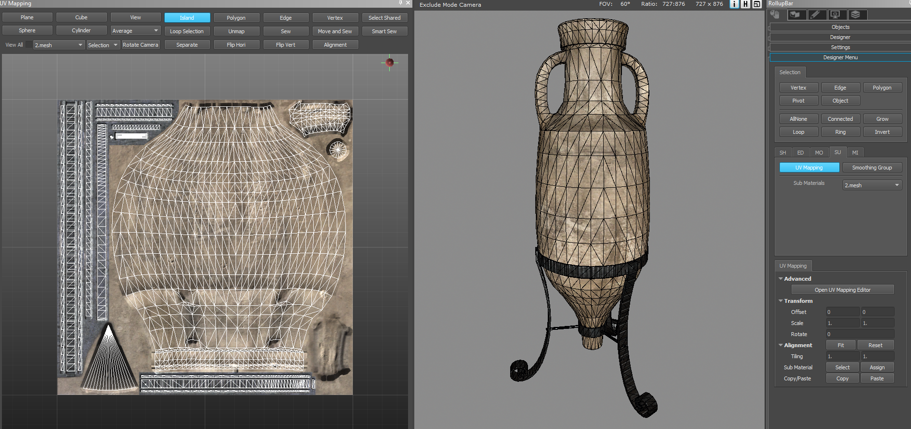
Controls
Mouse
| Button | Function |
|---|---|
| LMB | Selection, Transform, Manipulation etc. |
| Scroll wheel | Camera Zoom In/Out |
| Middle mouse button | Pans the camera |
Keyboard
| Key | Function |
|---|---|
| 1 | Translation Gizmo |
| 2 | Rotation Gizmo |
| 3 | Scale Gizmo |
| Z | Move camera to look at the Selected Elements |
| W,A,S,D | Camera navigation |
| Ctrl + Z | Undo |
| Ctrl + Shift + Z / Ctrl + Y | Redo |
| Del | Unmap |
| Ctrl + A | Select All/None |
| F5 | Refresh all UV islands to remove unused onesa |
Opening the UV Mapping Editor
1. By going to Tools -> Designer Tool -> UV Mapping.
2. In the Designer tool itself:
- Select a Designer object
- In the Designer tool, go to Advanced -> Groups/UV
- Click UV Mapping, followed by Open UV Mapping Editor in the pane that appears underneath:
Basic Unwrapping Workflow
After opening the UV Mapping Editor (see above):
- Select the polygons you want to unwrap in the 3D Viewport
- Choose either Plane, Cube, View, Sphere or Cylinder in the UV Mapping Editor to unwrap the selected polygons
- Check the result output in the UV Mapping Editor
Unwrapping Functions
Basically polygons in a Designer object have to be manually unwrapped to give them UV coordinates. To do that first select the polygons that you want to unwrap and select from Plane, Cube, Sphere, Cylinder or View buttons in the UV Mapping Editor. The selected polygons will be wrapped to the UV mapping view and the current sub material ID will be assigned to them.
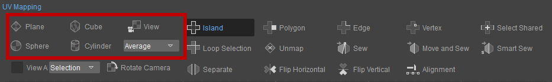
Plane
A plane projection whose normal direction is determined by one among the X, Y, Z or the average direction of the selected polygons is used to unwrap polygons.
- Select the desired polygons (through Designer Tool -> Selection -> Polygon and then holding Ctrl while left-clicking the desired polygons)
- Open the UV Mapping Editor (by clickaing Designer Tool -> UV Mapping -> Open UV Mapping Editor)
- In the UV Mapping Editor, click the Plane button
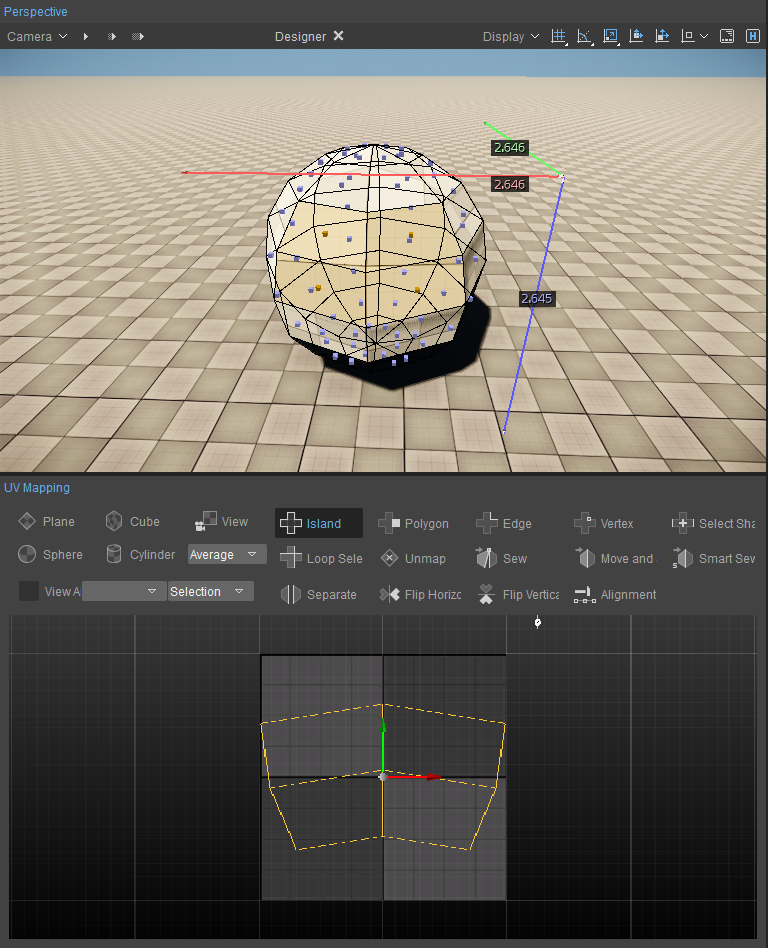
If you select multiple polygon groups that are separated from one another, then UV islands (as many as the selected polygon groups) will be created as shown below.
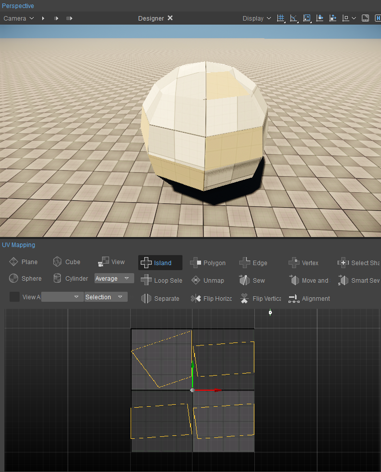
Cube
A projected direction, of each selected polygon will be determined by the closest direction among Up(0,0,1), Down(0,0,-1), Left(-1,0,0), Right(1,0,0), Forward(0,1,0) and Back(0,-1,0). If a normal direction of a polygon is directed toward (0.4082,0.4082,0.8164), then the polygon will be projected toward the Up direction.
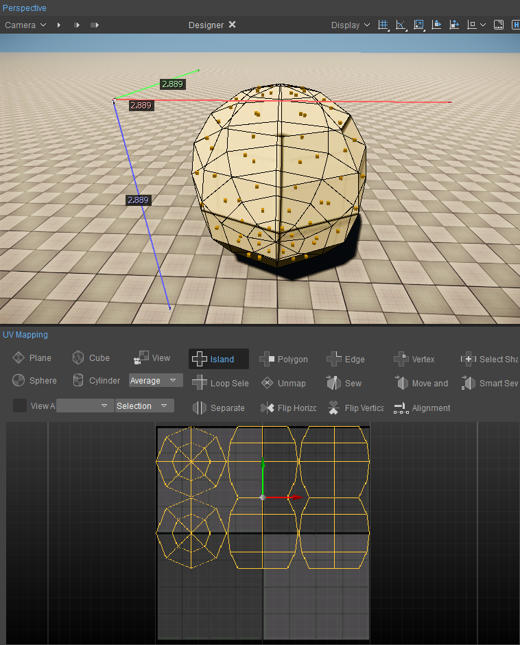
View
All selected polygons will be projected to a plane whose normal direction is in the camera's viewing direction.
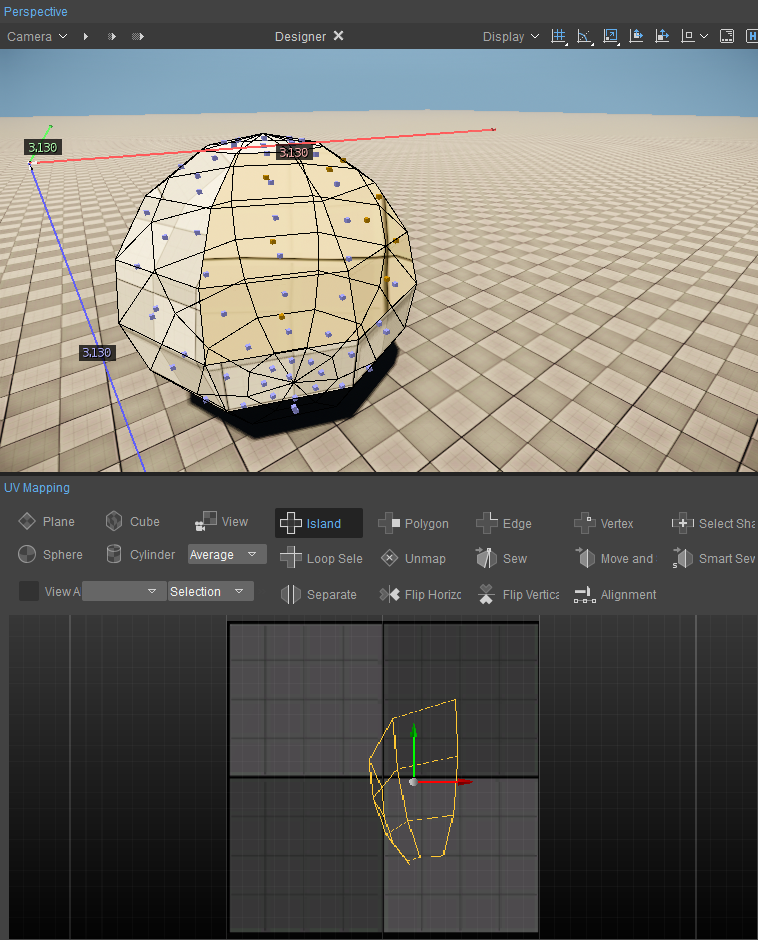
Sphere
UVs will be determined by spherical coordinates.
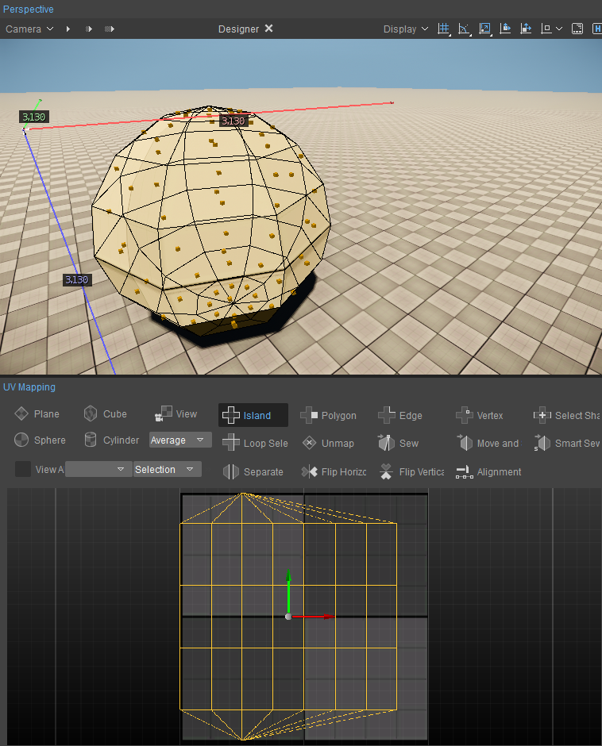
Cylinder
UVs will be determined by cylindrical coordinates.
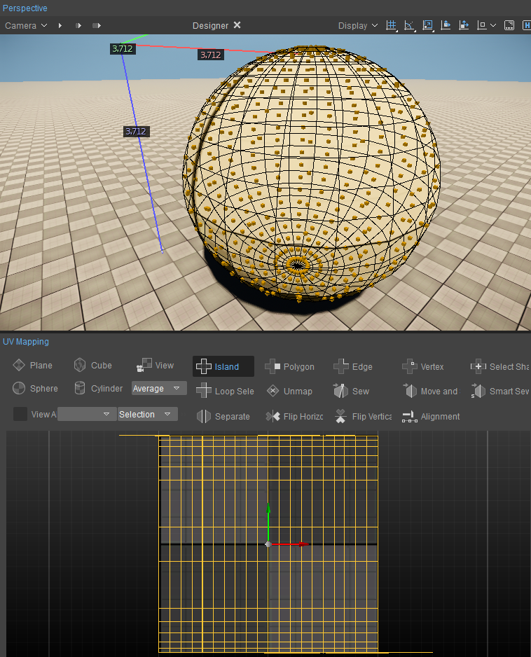
Manipulation Functions
The rest of the options in the UV Mapping tool are ways to manipulate the UVs.
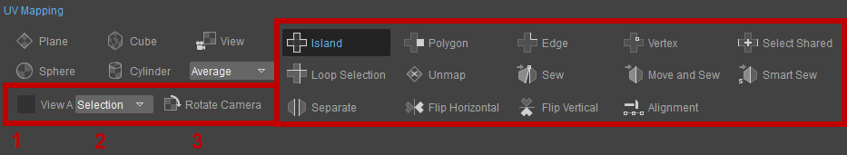
| Number | Function | Description |
|---|---|---|
1 | View All | If this is checked, all UV islands will be displayed all the time. |
2 | Pivot Type | There are two types of pivot. One is a pivot from selected elements, the other is the UV cursor which looks like this 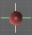 You can select either pivot types from the the pivot combo box. |
3 | Rotate Camera | Every time you hit this button the camera will be rotated by 90 degrees. |
Island/Polygon/Edge/Vertex
An element represents either an Island, Polygon, Edge, or Vertex.
You can select elements by clicking LMB or drawing a rectangle by dragging the mouse holding LMB. Holding down Ctrl and selecting multiple elements is also possible.
The selected elements are represented in orange while the corresponding elements are represented in blue as shown below:
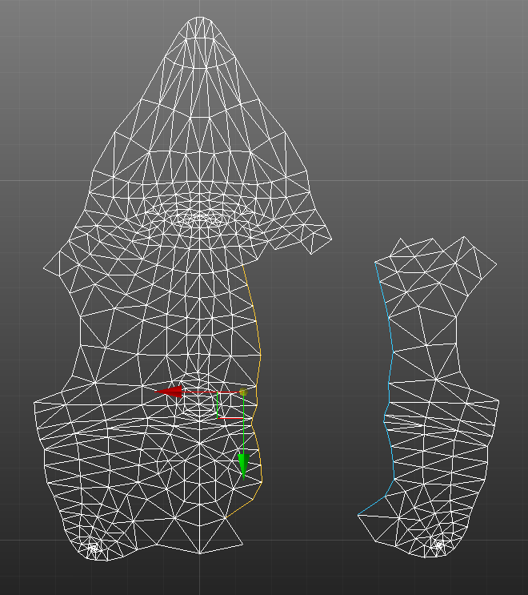
The selected elements can be transformed by manipulating a gizmo or by dragging the mouse. The gizmo can be switched to Move, Rotate and Scale mode by pressing the 1, 2 or 3 buttons or by clicking the corresponding button in the toolbar.
The pivot position is determined by either the center of the selected elements or the UV cursor position. This is set through the Pivot Type combo box in the UV Mapping Editor.
Select Shared
If you want to select blue elements which are the corresponding elements to the selected elements, hit this button. See below pictures.
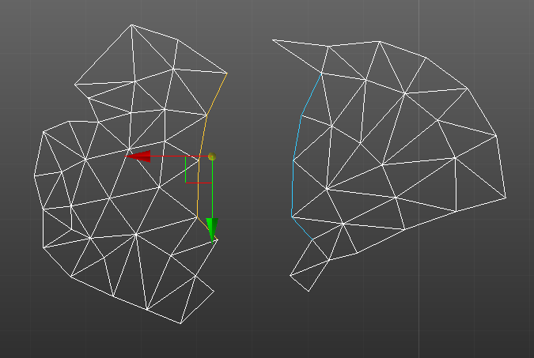 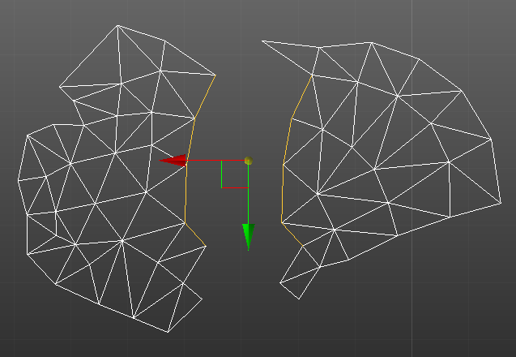
Loop Selection
The Loop Selection in the UV Mapping Editor covers both border Edges and inside Edges just like the Loop tool in the Modeling tool.
Border Edge selected (left: initial border selected, right: result after Loop Selection) 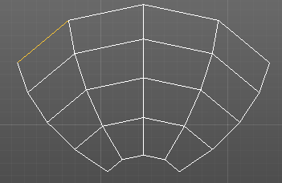 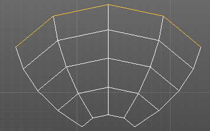
Inside Edge selected (left: initial border selected, right: result after Loop Selection) 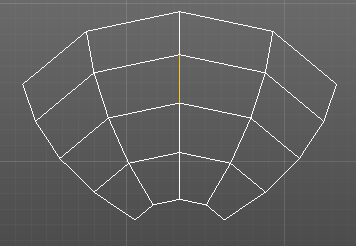 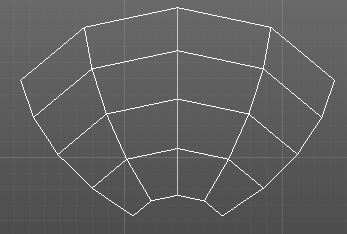
Multiple Edges selected (left: initial border selected, right: result after Loop Selection) 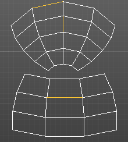 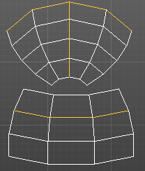
Unmap
Removes UV polygons from the UV Mapping Editor. When polygons are unmapped, UVs of them will be generated automatically and based on positions.
Sew
Attaches the first selected Edge border along the second selected border Edges, but does not move the island belonging to the selected Edges.
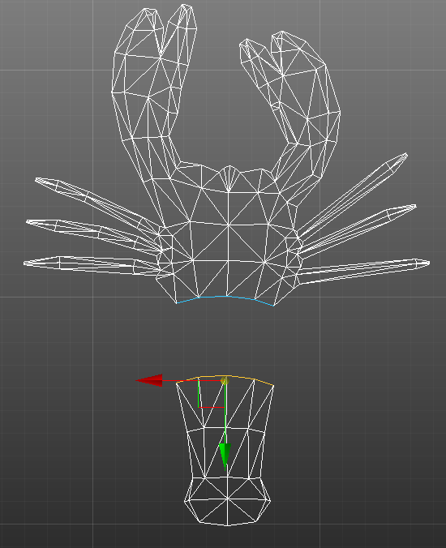 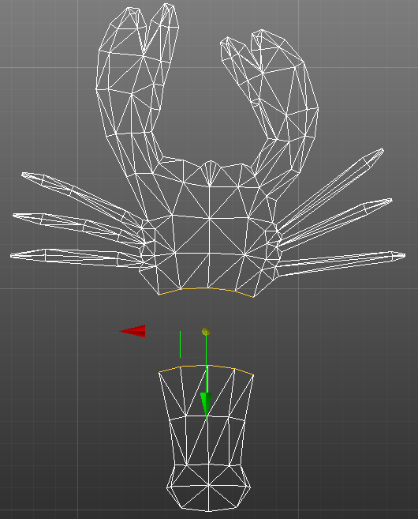 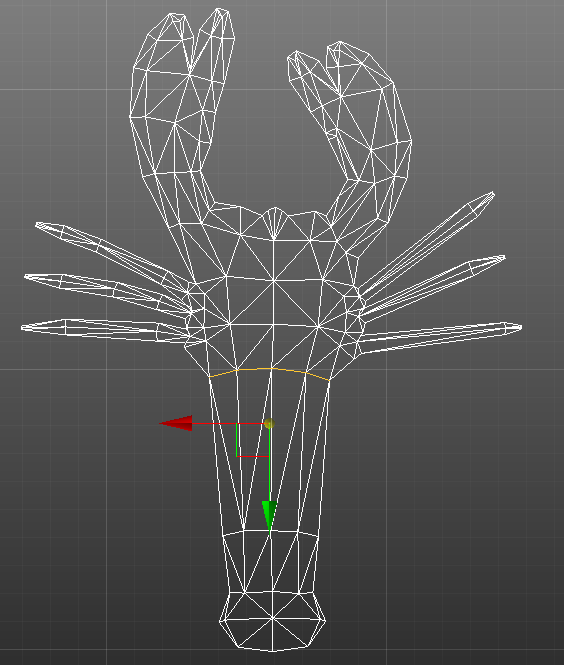
Move and Sew
Moves the island belonging to the first selected border Edges to orient them to the second border and attaches the first border to the second border.
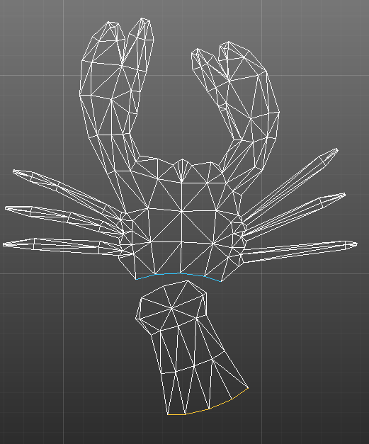 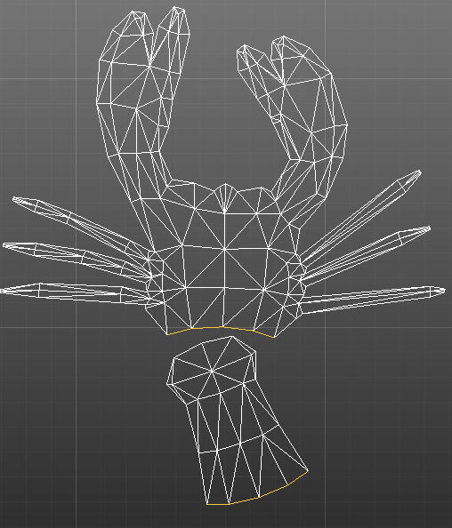 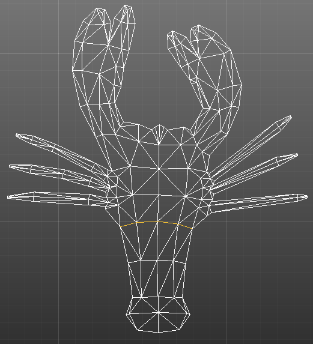
Smart Sew
When not using Smart Sew, four steps are usually required to sew Edges to other corresponding Edges:
- Selecting an Edge
- Clicking Loop Selection
- Clicking Select Shared
- Clicking Move and Sew
Having to repeat these steps every time you want to sew Edges together takes a lot of time, hence Smart Sew has been introduced to make the process much easier and faster.
- One Edge selected (orange Edge in screenshot below). Loop Selection, Select Shared and Move and Sew are run sequentially. The corresponding Edge is highlighted in blue:
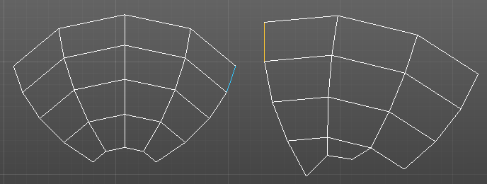
Click Smart Sew and the the two UV islands will be merged into one UV island: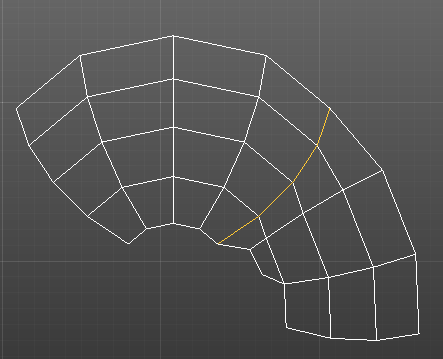
- Multiple Edges selected (orange color Edges) (Select Shared and Move and Sew are run sequentially). The corresponding Edges are highlighted in blue:
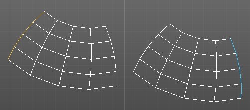
Click Smart Sew and the two UV islands are merged into one UV island: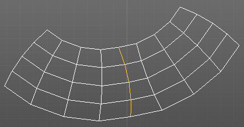
Separate
Separates the selected UV polygons from an island to which they belong.
The first screenshot below shows an island that has been selected. The second screenshot shows some selected UV polygons from the island. Selecting Separate will then separate out the selected UV polygons and they become a separate island (third screenshot):
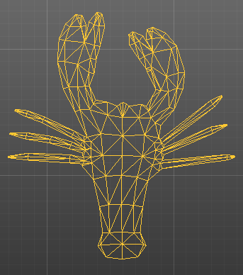 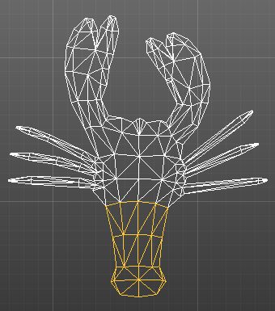 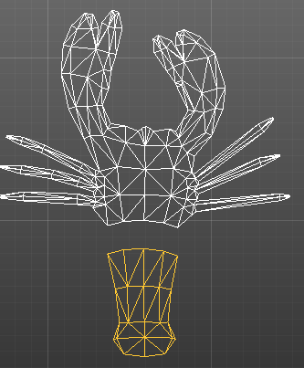
Flip Horizontal/Flip Vertical
Flips the selected elements horizontally or vertically over a pivot position.
Original, Flip Horizontal, Flip Vertical 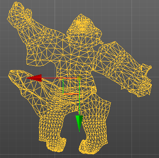 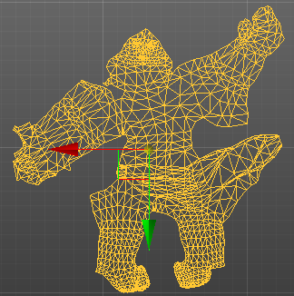 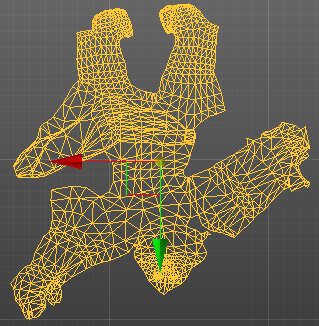
Alignment
Aligns the selected UV positions along an X or Y axis. The axis with the longest length of a bound rectangle (of the selected elements) is used for alignment.
Alignment with X axis 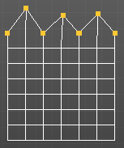 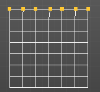
Alignment with Y axis 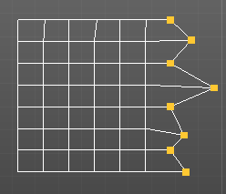 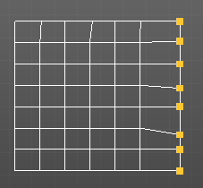